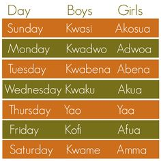

The Akan are the largest ethnic group in both Ghana and the Ivory Coast.They were believed to have migrated from the Sahara desert and Sahel region of Africa.This page looks into one of the biggest customs in the Akan culture which is child naming. Below is a full list of Akan 'day names'.
